¶ Most if not all the two stroke race bikes sold now-a-days have a power valve in the exhaust port. A power valve is just a piece of metal that moves down and covers part of exhaust port making it smaller. Big ports mean big horsepower, but they also mean narrow power band. By making the port smaller, the power valve helps make the power band wider. It does this by keeping more of the fuel mixture in the cylinder, and out of the exhaust pipe, at lower RPM.
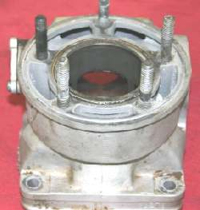 Honda CR250 Powervalve Open. |
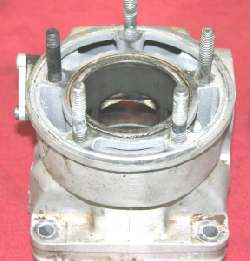 Honda CR250 Powervalve Closed. |
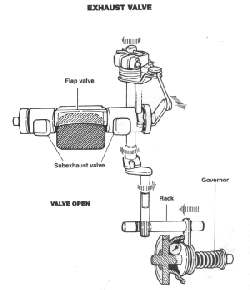 Honda CR250 Powervalve Open. |
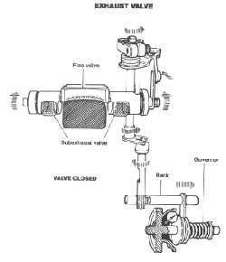 Honda CR250 Powervalve Closed. |
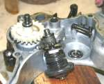 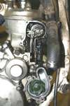
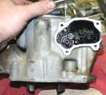 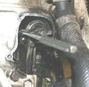
Also remember that these things require regular maintenance to remove carbon. On most Race bikes that means cleaning and readjusting them every seven (7) to twelve (12) hours of running.
If you have a steel cylinder liner, and not a plated cylinder, you can bore the cylinder to a bigger oversize. If you do so, you will need to grind the Power Valve a bit so it will not hit the new, oversized piston.
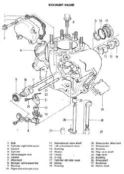 Honda CR250 |
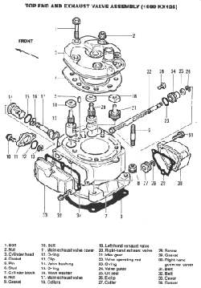 Kawasaki KX125 |
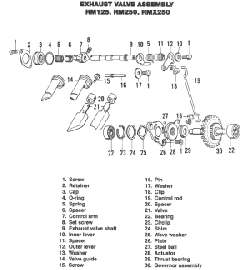 Suzuki RM125, 250 |
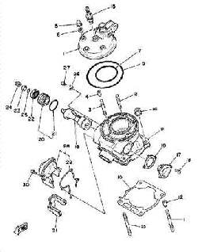 Yamaha YZ125 |

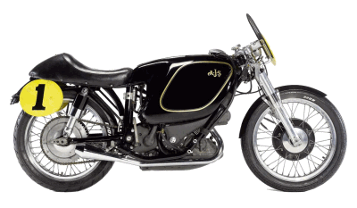 |
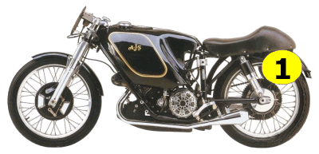 |
Copyright © 1999-2005 dansmc.com. All rights reserved.